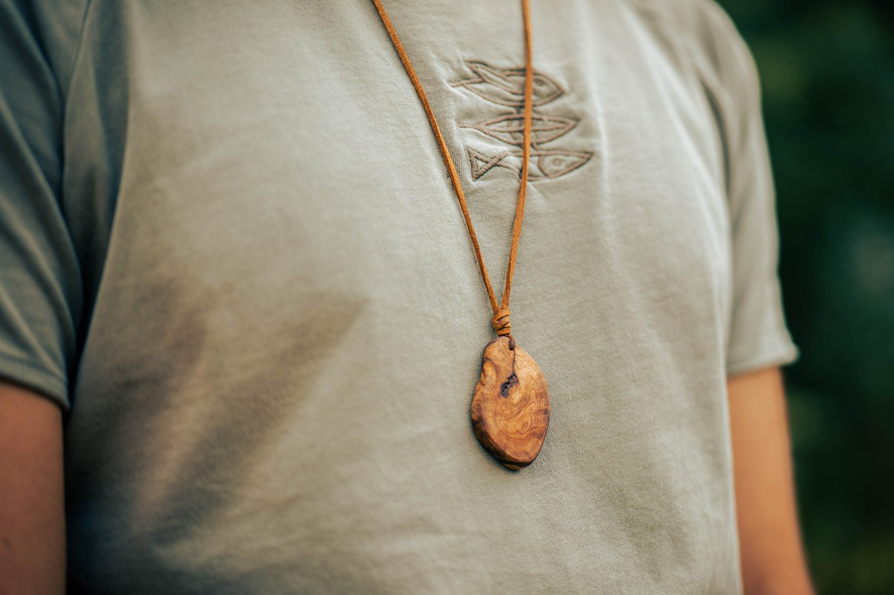
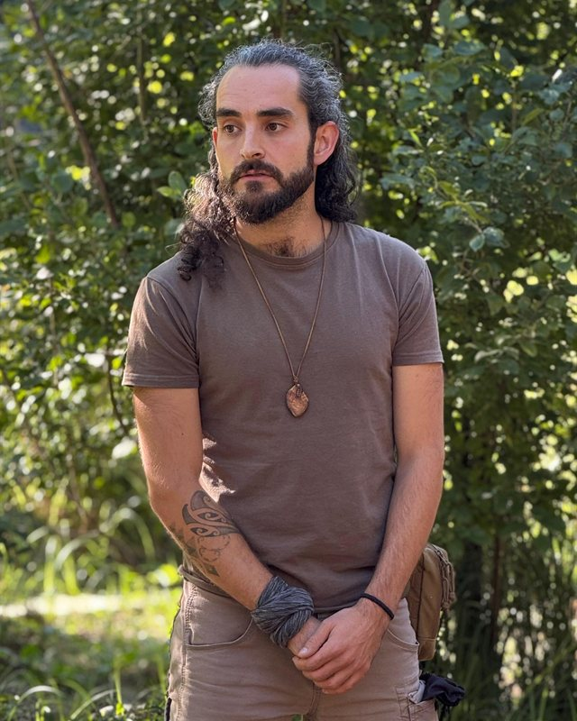

Ein Ende des inneren Kampfes
Vier Monate gemeinsam unterwegs – draußen in der Natur und in der Arbeit mit dir selbst.
Damit du wieder spürst, wer du als Mann eigentlich bist.
Die meisten von uns Männern haben gelernt, zu funktionieren: stark zu sein, zu leisten, voranzukommen und dabei möglichst wenig zu spüren. Was uns dabei verloren geht, merken wir oft erst spät – die Verbindung zu uns selbst, zu anderen und zu dem, was uns umgibt.
Vieles, was in unserer Welt gerade schiefläuft, kommt aus genau diesem Kampf. Aus dem Gegeneinander, aus Konkurrenz und Ellenbogen, aus einem Ego, das ständig beweisen muss, dass es genügt. Ich glaube nicht, dass wir dafür noch mehr Stärke brauchen, noch mehr Tempo oder noch mehr Wissen. Ich glaube, wir brauchen ein anderes Bild davon, was es heißt, ein Mann zu sein:
Ich nenne ihn den Erdhüter.
Einen Mann, der den Kampf gegen sich selbst beendet und damit auch den gegen andere.
Einen Mann, der wieder in Beziehung tritt: mit sich, mit anderen Menschen und mit der Natur.
Und einen Mann, der seinen Platz kennt, Verantwortung übernimmt und nach Werten lebt, die unsere Welt mehr denn je braucht:
Von außen stimmt vieles. Die Arbeit läuft, die Beziehung ist in Ordnung, und wenn dich jemand fragt, sagst du gut – und meinst es nicht einmal falsch. Trotzdem gibt es Momente, in denen sich alles weit weg anfühlt, als würdest du dein eigenes Leben von außen betrachten.
Du kennst deine Muster, hast Bücher gelesen, vielleicht Therapie gemacht. Du kannst genau erklären, warum du bist, wie du bist. Nur ändert das erstaunlich wenig daran, wie sich dein Alltag anfühlt. Das Wissen ist da, aber es ist im Kopf geblieben.
Und vielleicht kennst du diesen Kampf, der nie ganz aufhört: gegen die eigene Müdigkeit, gegen das Gefühl, nicht zu genügen, gegen alles in dir, was weich ist und keinen Platz haben darf. Ein Kampf, der sich nach Stärke anfühlt und in Wahrheit nur Kraft kostet. Was dir fehlt, ist kein weiterer Sieg, sondern ein Boden unter den Füßen.
Vielleicht ahnst du längst, dass du nicht noch eine Methode brauchst, um dich zu verstehen, sondern eine andere Art, als Mann in der Welt zu stehen.
Diese Begleitung ist etwas für dich, wenn du …
Und nichts für dich, wenn du …
Mit Michael in der Natur unterwegs zu sein, ist jedes Mal eine Bereicherung. Er verbindet Feingefühl und Achtsamkeit mit einer klaren, kraftvollen Präsenz – und schafft Räume für Leichtigkeit, Vertrauen und echtes Wachstum. Seine Arbeit ist eine Einladung, die Natur und sich selbst tiefer zu entdecken.
Ich kenne niemanden, der dir die Natur und ihre Schätze so gut nahebringen kann wie Michael. Durch seine Arbeit kommt der Mensch wieder bei sich selbst an, kommt wieder in Verbindung mit dem, was wirklich zählt, und kann sich erinnern, wer er tief in sich tatsächlich ist. Ein absolutes Muss für jeden, der genug hat von all dem künstlichen Lärm da draußen!
Michael hat die Fähigkeit, auf die leisen Töne zu lauschen – im Innen und im Außen – und dadurch so eine Präsenz zu schaffen, die dir in jedem Moment eine unbeschreibliche Sicherheit und Wertschätzung bietet. Seine feine spürige Art durchs Leben und die Natur zu gehen, inspiriert mich immer wieder aufs Neue. Ich bin über jeden Schritt dankbar, den wir gemeinsam gehen dürfen und ihn als Wegbegleiter zu wissen. Als nahestehenden Freund und als Naturmentor.
Von außen ein gutes, erfolgreiches Leben als Projektmanager – und hätte mich damals jemand gefragt, hätte ich es auch so beschrieben.
Nur habe ich mich verstellt, meistens ohne es zu merken. Ich wusste genau, wer ich in welchem Raum zu sein hatte. Verloren ging dabei die Verbindung zu mir selbst – meine Beziehungen blieben an der Oberfläche. Und je mehr ich erreicht habe, umso größer wurde die Leere in mir.

Geholfen hat mir keine Methode und kein Buch. Sondern Zeit für mich, die Natur und Menschen, die mir ehrlich begegnet sind. Es hat gedauert und war nicht immer angenehm. Aber es war es wert. Heute bin ich bei mir angekommen und in Frieden mit dem, was mich hierher gebracht hat.
Und genau deshalb begleite ich dich. Nicht, weil ich alles verstanden habe und alles weiß, sondern weil ich den Weg selbst gegangen bin.
Bevor wir loslaufen, schauen wir uns in Ruhe an, wo du stehst: Was bewegt dich, und wo willst du hin? Vier Monate sind eine lange Zeit – nur so finden wir heraus, ob ich der Richtige für deinen Weg bin.
Bereit, den ersten Schritt zu gehen? Dann lass uns sprechen.
Gespräch buchen →Vier Tage draußen, frei gestaltet nach dem, was du gerade brauchst. Ohne Ablenkung und ohne Termine kommt vieles an die Oberfläche, was im Alltag keinen Platz findet.
Zwischen den Tagen draußen treffen wir uns online. Denn das Entscheidende passiert dann, wenn du wieder in deinem Alltag stehst – mit denselben Menschen und denselben Mustern.
Veränderung braucht Zeit. Deshalb bin ich auch zwischen den festen Terminen per WhatsApp für dich da.
* Der Weg des Erdhüters handelt davon, wieder in Beziehung zur Natur zu treten und für das einzustehen, was einem wichtig ist. Deshalb fließen 50 € als Spende an Mission Erde e. V. – für Umwelt- und Artenschutzprojekte weltweit.
Erzähl mir, wo du gerade stehst. Du musst noch nicht wissen, was du suchst – wir schauen gemeinsam, ob das dein nächster Schritt ist.